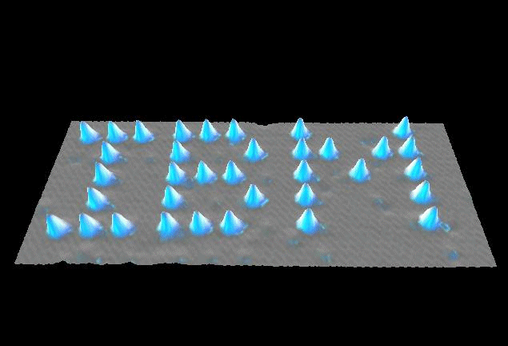
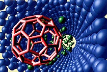

Oops,
that's gotta hurt! It's almost too absurd to consider, but in the near future
it may be a very real possibility: all life on earth is eaten up by
man made machines, in what physicists euphemistically call `the gray goo
problem'.
It
was no one less than the Nobel prize winning physicist Richard Feynman who
gave rise to the `problem'. In a famous 1959 lecture, Feynman predicted that
man will some day be able to make nano machines, devices so tiny that
you can't even see them. A nanometer is a billionth of a meter, and a nano
machine would be a thousand times smaller than the thickness of a human
hair.
Well,
mr. Feynman wasn't drunk when he predicted this. Machines ARE getting
smaller: just compare the microchips of today with the huge
taperecorder-like computers from the fifties. But it can go much smaller
still. In principle, Feynman foretold, you can make computers and other
gadgets out of single atoms. You only have to `click' them together in the
right way, like tiny pieces of construction lego.
And
he was right. In 1986, the physicist K. Eric Drexler took up Feynman's ideas,
and coined the term nanotechnology: `the technology of creating and
working with devices only a few nanometers big', as it is defined. In 1990,
the world realised that this was no longer science fiction, as a team of IBM
researchers managed to arrange 35 single xenon atoms so that they spelled out
the logo of IBM. Rumour has it that another research team responded to this
crafty display of atom knitting by doing some intellectual nano graffiti: `Bill Gates sucks', also jotted down in single xenon atoms.
|  |
|
|
Ever
since then, nanotechnology has underwent a modest revolution. With the
coming of the Atomic Force Microscope, which uses a tiny `needle' to
explore the surface of materials, scientists have been able to `pick up'
single atoms and move them elsewhere. Numerous universities and
privately funded institutes engage in nanotech. Nano engineers have at their
disposal a toolkit full of crafty gadgets, ranging from nano
trains that transport atoms across a nano track, to a nano pen that squirts
out atoms instead of ink. Also, there's a growing collection of nano
switches, nano wires, nano tubes and - more recently - the first nano
`engines': rotor shaped molecules that rotate under the influence of the
right changes in temperature and light.
Well,
but we're still alive and kicking. So where's the gray goo? O, wait and see.
The end of the world may be nearer than you think.
Nano
philosophers foresee that one day (some estimate around 2010) it will be
possible to create a nano assembler: a man made molecule, that is
`programmed' to create certain things out of raw materials. A nano assembler
would for instance pick up plain carbon atoms and rearrange them into the
molecular structure of a diamond. Or it would make water out of the atomic
parts of plain air. Or a cheese sandwich out of dust. Or water into wine,
you name it.
This notion is not as weird as it sounds. Our DNA- and RNA-molecules do it all the time! They pick up the raw materials from our food, and turn them into complex molecules. DNA and RNA are nano assemblers that manufacture whole organisms, with arms and legs, and fingers that can type the word `nanotechnology'.
|  |
|
|
But
there's a nasty downside. What will such a self-replicating nano machine do
if you carelessly tossed it away? You guessed it: it would go on
grabbing all atoms within reach, rearranging them into copies of itself. And
the copies would make more copies of themselves. And those copies would make
even more copies of the copies of the copies. And so on.
No, you just DON'T want to know what this means. Within only 72 hours after the release of the first molecular nano machine, every single atom on earth would be `used' to create new nano machines. In other words, all plants, animals, humans, cars, buildings and even rocks would have been `eaten up' by a vast, exponentially growing army of invisibly small nano devices.
There you have it: gray goo. Lots of it. Bye-bye world.
 |
 |